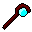
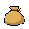
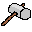
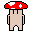

←こいつを動かして操作するよ
←こいつを動かして操作するよ下にある矢印のボタンかキーボードの十字キーで移動
真ん中のoボタンかZキーで敵を攻撃する/宝箱をあける/ターン送りをする
ローグライク方式だから、こちらが動かない限りは敵も動かないよ
操作説明
更新履歴
かなダンジョンはローグライク形式のゲームです。
敵をよけたり倒しながらダンジョンを進んでいきましょう。(ゴールなんてなかった)
←こいつを動かして操作するよ
下にある矢印のボタンかキーボードの十字キーで移動
真ん中のoボタンかZキーで敵を攻撃する/宝箱をあける/ターン送りをする
ローグライク方式だから、こちらが動かない限りは敵も動かないよ
宝箱 を開けると右にあるアイテム欄にアイテムが増えるよ。
を開けると右にあるアイテム欄にアイテムが増えるよ。
アイテムは主に
ロッド系(武器)/盾系/こな系がある。
武器や防具は持っているだけじゃ意味がないぞ!ちゃんと 装備しないとな!
どのようなアイテムかを調べたいときはアイテムをクリックすれば表示される。
使いたい/装備したいときはクリックした後に[使う]ボタンを押せばOK!
ハンマーは攻撃で壁などを壊せる。宝箱に向かって攻撃すると破壊して中身を取り出すこともできる。
ロッドと盾はできている素材によって威力が違う。(木→銅→銀→金剛石/ミスリル)
とても威力の高い最上級の素材[金]を使った装備があるらしい。
それは宝箱からは入手できない...
こな系は回復の粉と武器/盾をアップグレードする粉があるよ。
回復の粉は10HP回復
武器アップグレードの粉は武器の素材を1ランク上げる
たてアップグレードの粉はたての素材を1ランク上げる
回復は最大HPを超えて回復できないから注意。
ダンジョンの中には敵がいっぱいいるよ。
(今のところ敵の見た目による違いなし)
スライム はRPGによく出てくる定番のザコ。
はRPGによく出てくる定番のザコ。
ジャイアントきのこは配管工のおじさんに食べられそうになったきのこがにげて巨大化した。
モンスターツリーはダンジョンの守り木。
がんぎつね は元は普通のきつねだったが仲間が銃で撃たれたのをきっかけに、スナイパーへと進化した。
は元は普通のきつねだったが仲間が銃で撃たれたのをきっかけに、スナイパーへと進化した。
(飛び道具を使うように設定する予定)
敵にやられてしまうと地上に戻されちゃうよ。
地上にいるこいつ はダンジョン探索を有利に進めるためのものを作ってくれる。
はダンジョン探索を有利に進めるためのものを作ってくれる。
が、作るためにはほしくず が必要らしい。ほしくずはダンジョンを出たときに スコア÷1000 した数手に入る。
が必要らしい。ほしくずはダンジョンを出たときに スコア÷1000 した数手に入る。
看板 は更新履歴とクレジットを見れるよ
は更新履歴とクレジットを見れるよ
最後まで読んでくれてありがとう!by jyujyun